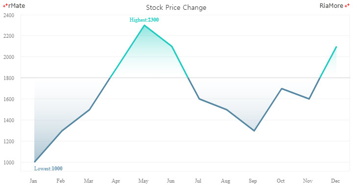

영역 차트
영역 차트는 라인 차트에 기반한 차트입니다.
영역 차트가 라인 차트와 다른 점은 일반적으로 선과 축 사이의 영역이 색 혹은 패턴으로 채워져서 강조하는 효과를 사용자에게 제공한다는 것입니다.
영역 차트는 <Area2DChart> 노드의 series 속성값에 <Area2DSeries> 노드를 설정하여 생성할 수 있습니다.
다음은 영역 차트를 생성하는 코드와 이를 적용해서 출력한 차트의 예제입니다.
<Area2DChart showDataTips="true" dataTipDisplayMode="axis">
...
<series>
<Area2DSeries labelPosition="up" yField="Vancouver" showValueLabels="[2]" form="curve">
...
</Area2DSeries>
</series>
</Area2DChart>
See the CodePen 알메이트 차트 - 영역 차트
차트에 그려지는 영역이 여러 개일 경우 (<Area2DSeries> 노드가 여러 개 설정 됨),
영역들이 차트에 표현되는 방식은 <Area2DChart> 노드의 type 속성의 설정에 따릅니다.
다음에는 type 속성에 설정 가능한 값과 이에 따른 표현 방식이 설명되어 있습니다.
- overlaid: 영역은 이전에 표현된 영역들 위에 덮어씌워진 형태로 표현됩니다. 따라서 제일 마지막에 표현되는 영역이 제일 전면에 표현됩니다. (기본값)
- stacked: 영역은 이전에 표현된 영역들 위에 스택 형태로 표현됩니다. 따라서 제일 마지막에 표현되는 영역이 최상위 스택에 표현됩니다.
- 100%: 영역은 100% 스택 형태로 표현됩니다. 전체 영역의 합에 대해서 표현되는 영역이 차지하는 상대적 비율만큼 해당 영역에 할당됩니다.
차트에 그려지는 선의 형태는 <Area2DSeries> 노드의 form 속성을 통해서 설정할 수 있습니다.
다음에는 form 속성에 설정 가능한 값과 이에 따른 표현 방식이 설명되어 있습니다.
- segment: 각 데이터 포인트를 직선으로 연결합니다. (기본값)
- curve: 각 데이터 포인트를 곡선으로 연결합니다.
- step: 수평 직선으로 시작해서 각 데이터 포인트를 계단선으로 연결합니다.
- reverseStep: 수직 직선으로 시작해서 각 데이터 포인트를 계단선으로 연결합니다.
오버레이 영역 차트
오버레이 타입의 영역 차트는 <Area2DChart> 노드의 type 속성을 “overlaid” 로 설정하여 생성합니다.
- 주의
type 속성의 기본값이
“overlaid” 이므로 type 속성을 설정하지 않으면 자동으로 overlaid 타입의 영역 차트가 생성됩니다.
다음은 <Area2DChart> 노드의 type 속성을 “overlaid” 로, <Area2DSeries> 노드의 form 속성을 “curve” 로 설정하는 코드와 이를 적용해서 출력한 차트의 예제입니다.
<Area2DChart type="overlaid" showDataTips="true" dataTipDisplayMode="axis">
...
<series>
<Area2DSeries yField="goods" form="curve" displayName="goods" />
<Area2DSeries yField="income" form="curve" displayName="income" />
<Area2DSeries yField="service" form="curve" displayName="service" />
</series>
</Area2DChart>
See the CodePen 알메이트 차트 - 오버레이 영역 차트
스택 영역 차트
스택 타입의 영역 차트는 <Area2DChart> 노드의 type 속성을 “stacked” 으로 설정하여 생성합니다.
다음은 <Area2DChart> 노드의 type 속성을 “stacked” 으로, <Area2DSeries> 노드의 form 속성을 “step” 으로 설정하는 코드와 이를 적용해서 출력한 차트의 예제입니다.
<Area2DChart type="stacked" showDataTips="true" dataTipDisplayMode="axis">
...
<series>
<Area2DSeries yField="goods" form="step" displayName="goods" />
<Area2DSeries yField="income" form="step" displayName="income" />
<Area2DSeries yField="service" form="step" displayName="service" />
</series>
</Area2DChart>
See the CodePen 알메이트 차트 - 스택 영역 차트
100% 영역 차트
100% 타입의 영역 차트는 <Area2DChart> 노드의 type 속성을 “100%” 로 설정하여 생성합니다.
다음은 <Area2DChart> 노드의 type 속성을 “100%” 로, <Area2DSeries> 노드의 form 속성을 “segment” 로 설정하는 코드와 이를 적용해서 출력한 차트의 예제입니다.
- 주의
form 속성의 기본값이
“segment” 이므로, form 속성에 값을 지정하지 않으면 자동으로 segment 유형의 선이 표현됩니다.
<Area2DChart type="100%" showDataTips="true" dataTipDisplayMode="axis">
...
<series>
<Area2DSeries yField="goods" form="segment" displayName="goods" />
<Area2DSeries yField="income" form="segment" displayName="income" />
<Area2DSeries yField="service" form="segment" displayName="service" />
</series>
</Area2DChart>
See the CodePen 알메이트 차트 - 100% 영역 차트
베이스라인 설정
영역 차트에 기준값을 지정하고 이를 차트 내에 직선(베이스 라인, baseline)으로 표시한 후 베이스 라인 위 영역과 아래 영역에 대한 스타일링을 다르게 지정할 수 있습니다.
기준값은 <Area2DSeries> 노드의 baseValue 속성에 설정하고 베이스 라인 위 영역에 대한 선과 배경색은
<areaStroke> 과 <areaFill> 속성에, 베이스 라인 아래 영역에 대한 선과 배경색은 <areaDeclineStroke> 과 <areaDeclineFill> 속성에 설정합니다.
다음은 이에 대한 코드와 이를 적용해서 출력한 차트의 예제입니다. 이 예제에서는 최대값, 최소값을 차트에 표현하기 위해 showMaxValueLabel 과 showMinValueLabel 속성을 “true” 로 설정하였고,
upLabelJsFunction 과 downLabelJsFunction 속성에 사용자 정의 함수명이 설정되었습니다.
<Area2DChart showDataTips="true">
...
<series>
<Area2DSeries yField="Profit" displayName="Profit" baseValue="1800" showMaxValueLabel="true" showMinValueLabel="true" upLabelJsFunction="upFunc" downLabelJsFunction="downFunc">
...
</Area2DSeries>
</series>
...
</Area2DChart>
function upFunc(seriesId, index, data, values){
return "<font color='#21cbc0'>Highest: <b>" + values[1] + "</b></font>";
}
function downFunc(seriesId, index, data, values){
return "<font color='#5587a2'>Lowest: <b>" + values[1] + "</b></font>";
}

See the CodePen 알메이트 차트 - 영역 차트에 베이스라인 설정